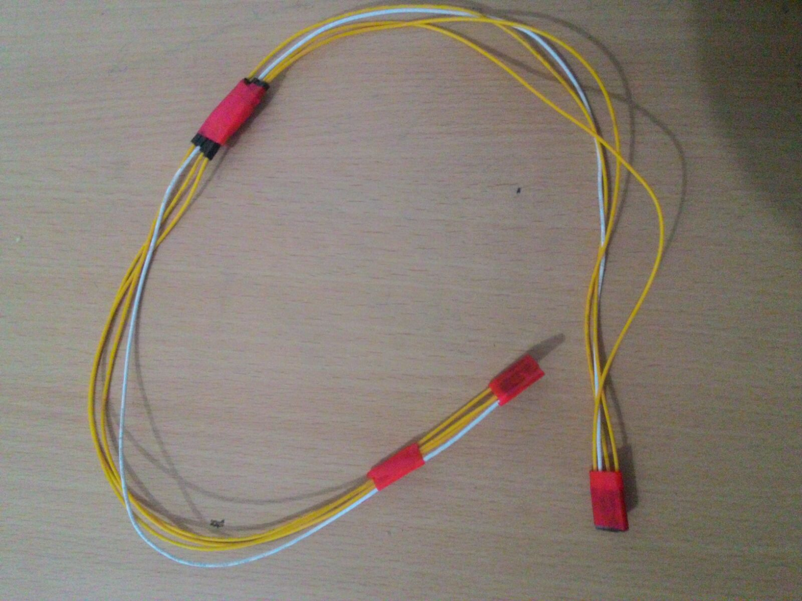
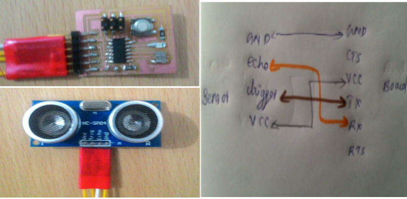
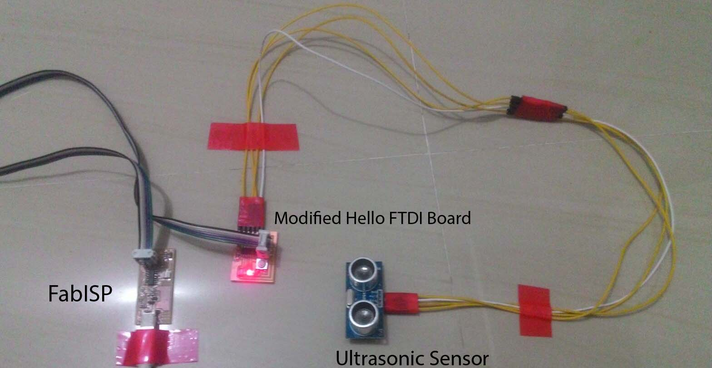
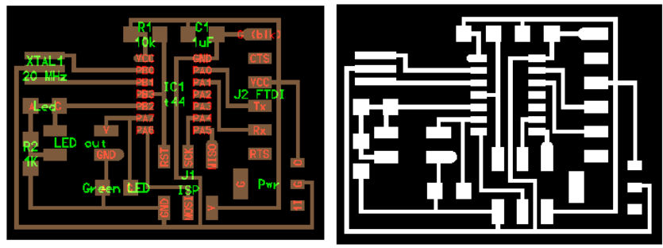

Parking Assist using Ping Sensor
Design Brief
Problem Statement
A low cost parking assist which updates the driver how close he / she is from the wall. After crossing a certain limit, the system will trigger an LED Indication / Sound Alarm.
Problem Description
Usually while parking a car or a bike it highly probable to hit a wall and lose our vehicles paint.If there is warning system that can notify the driver that he/she is very close to wall and he/she must stop now this issue can be solved. I am a bad driver in case of parking. I usually hit wall while I am parking car in reverse . This low cost parking assit can help me in avoiding this issue.
Constraints
The Ultrasonic sensor is not available in the invetory. I have to procure that locally. I am planning to design and fabricate casing using acrylic sheet by laser cutting. The box size is 5cm * 5 cm with a height of 4 cm. I need to cut two holes for the ping sensor at the top. The weight wont exceed 100gms.
Fabrication Process : PCB Design -> Milling PCB -> Soldering -> Programming -> Building the case
Cost
The average Cost of production will be less than Rs. 500 including price for the sensor.
PCB Fabrication
Since modifying Fabduino and doing project with that was failed and the availble time limit wa limited i decided to change my plan. I selected the Hello World FTDI board for my project beta testing. Using this board i can create the beta version of project with help of the Ping sensor and Fab ISP.I had my working Hello world board with me. I decide to give a try using that.
My first requiremnt was to arrange connector that can connect my sensor to FTDI Header of the board . Now the limitation is that i need to power the board using ISP. I ignored this since if i can successfully read measurement and test my beta using this board later i can design a new board with external power supply. i created a 4 pin connector using the connectors available in the inventory.

Connector
Now connect the cable to the sensor and the board in correct orientation.

Connections
I have a LED available on my board which am going to use as my indicator for distance. My plan is to make high delayed blink when the distance is higher than 10 inches and make sma delayed blinks when distance is less than 10 inches. For using this Ping sensor HC SR04 i need the library newping sensor which can be downloaded form here . We need to import this library first before coding. For that quit arduino if open and paste the unzipped downloaded folder to the library folder inside arduino folder.
/*
Parking Assist
Abhilash S T
27/11/2015
*/
#include //include the NewPing library
//I/O pins
int rLED = 8; // Setting pin 8 as output pin
int echo = 1; // Setting pin 1 as echo input from HC SR04
int trigger = 0; // Setting pin 0 as trigger pin.
//values to keep track of
int distance = 0;
NewPing sonar(0, 1, 500); //constructor for NewPing sonar(triggerPin, echoPin, max_CM)
void setup()
{
pinMode(rLED, OUTPUT);
}
void loop()
{
distance = sonar.ping_in(); //detect distance in inches
if(distance == 0)
{
digitalWrite(rLED, HIGH);
delay(1000);
digitalWrite(rLED, LOW);
}
else{
}
// if distance is greater than 10 inches led will glow for 1 second and will be off for 5 Second
if (distance >= 10 ) {
digitalWrite(rLED, HIGH);
delay(1000);
digitalWrite(rLED, LOW);
delay(5000);
digitalWrite(rLED, HIGH);
}
else{
}
//if distance is less than 10 inches LED with Blink with a deay of 150ms
if (distance <= 10 ) {
digitalWrite(rLED, HIGH);
delay(150);
digitalWrite(rLED, LOW);
delay(150);
digitalWrite(rLED, HIGH);
}
else{
}
} //end of loop

Project Setup
Now we need to burn this program into our board using Arduino IDE. Thank god there was no compiling errors in the program. Uploaded the code sucessfully and no i can see the LED blinking slowly. Now i arranged the component as shown below and tested using a paper as obstacle. When brought close say 10 inches from sensor the led was blinking very fast. So now i have my beta project running sucessfully.In the below video i have reduced the distance to 5 inches for convenience in taking video.
Parking Assist Beta Version.
Limitations of the beta Version
- Requires Fab ISP or 5v supply and need to use ISP header for powering the circuit.
- There only one LED available for indication purpose (Initially I planned for a RGB LED)
- There is no casing designed for the project
I have added a Regulator IC so that I can connect the cicuit to a 9V cell. Also i have removed the switch and added a Green LED there. So that I can have two level indication like when wall is not close Green LED will blink and and when wall is close Red on will blink and blink delay will will be reduced as the proximity increases.

Modified Project Circuit and Traces
Download Files here